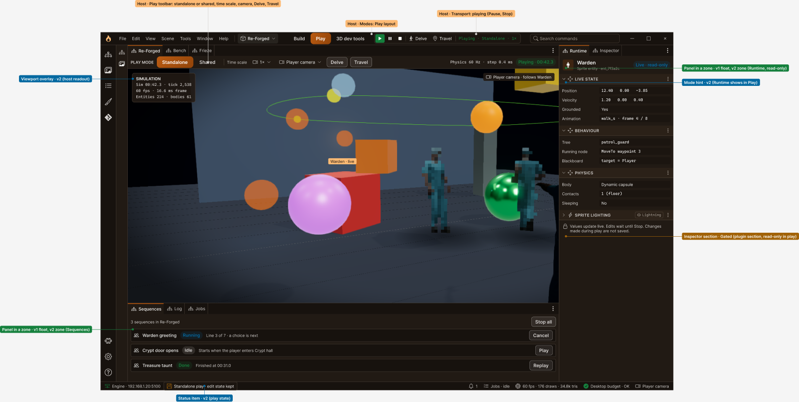
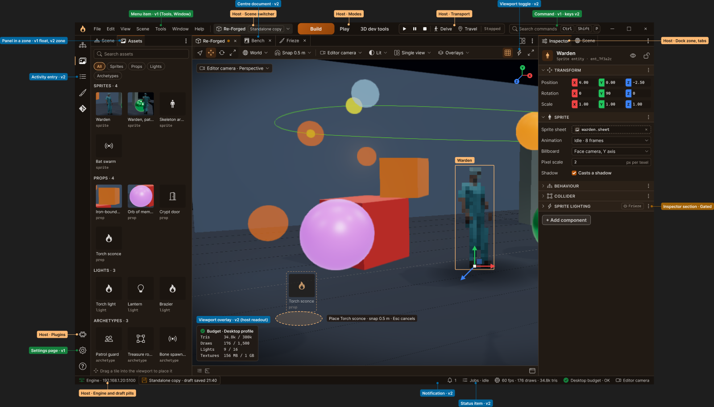
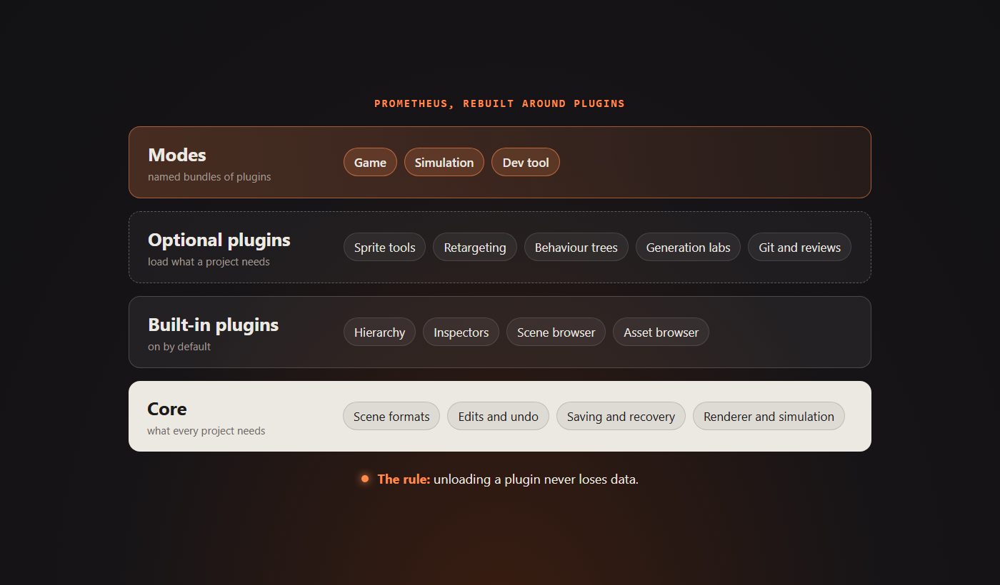

A solo-built 2.5D engine and MMO
Building Prometheus
A custom 2.5D engine and editor, built for Forgotten Memories, Endless Abyss: an online MMO set in an endless dungeon that reshapes itself around its players.
Rebuild underway: the desktop editor and its plugins are being builtLatest

The shell, the engine and a front door
The editor's shell is built, the desktop editor starts and stops its own engine, and Forge now has a real sign-in with passwords, GitHub and a device flow.
Read the postRecent posts

The rebuild starts: a desktop app and its first plugin
A day after the designs were approved, the code started. The editor is a desktop app now, with a plugin host, a first plugin and the new title bar.
Read the post
Round two: play, previews and Frieze
The second round of editor designs is approved: Play mode, Frieze as a plugin, phone previews and a first run for new world builders.
Read the post
Design first: drawing the new editor
The rebuilt editor is drawn in Figma and approved before any code is written. Round one is done.
Read the post
A plugin-shaped future
Why Prometheus is being rebuilt around plugins, and the one rule the rebuild can't break.
Read the post
Catching up: two months of Prometheus
Two months and a little over 1,800 commits in, this is where Prometheus stands, with links to the posts that go deeper. It ends with why development is pausing for a rebuild.
Read the postThe tools behind the tools
Forge, the project tools that live beside the engine, and why plain files are the source of truth.
Read the postOlder posts
October 2026
- Stocking the shelvesA sorted library of about 2,400 animation files and 409 free models, ready for Frieze.
- Will it run on a phone?Budgets, streaming, static exports and the first numbers from real phones.
- Teaching sprites to thinkScripts, behaviour trees, senses, crowds and dialogue: the toolbox game logic will be written with.
- A guided tour of every featureThe showcase scene became a hall with ten stations, and a dry run caught three mistakes before I saved it.
September 2026
- A world that isn't there yetGround nobody has reached doesn't exist. Here's what that rule asks of the engine.
- First steps in DelveUntil this week Prometheus was something you looked at. Now you can walk around in it.
- Frieze: pixel art from 3D modelsHow every sprite in the game gets made, and my favourite bug so far.
- The server owns the worldThe editor passed its first real milestone today. Here's the decision underneath it.
- Six times faster type checkingMoving to TypeScript 7's native compiler, and the command it quietly took over.
- The save that deleted thingsFour bugs that could lose work for good, one shape behind all of them, and three rules that came out of it.
- The game behind the engineWhat Forgotten Memories, Endless Abyss is about, and why it needs an engine of its own.